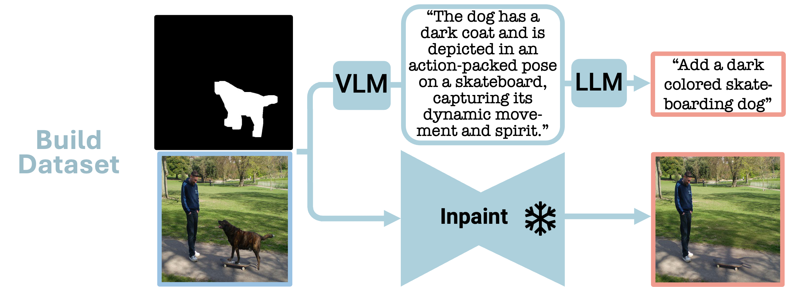

Paint by Inpaint
Learning to Add Image Objects by Removing Them First
1Weizmann Institute of Science
2Technion - Israel Institute of Technology
Presented at CVPR 2025
TL;DR
By creating an extensive pipeline for removing objects from images using a pretrained inpainting model, and by generating realistic object addition instructions via a VLM and an LLM, we have created a large-scale dataset named PIPE. Utilizing PIPE, we train a diffusion model to reverse the object removal process, effectively adding objects to images guided by textual instructions and without the need for input masks, thereby achieving state-of-the-art editing results.
Object Addition Examples
Abstract
Image editing has advanced significantly with the introduction of text-conditioned diffusion models. Despite this progress, seamlessly adding objects to images based on textual instructions without requiring user-provided input masks remains a challenge. We address this by leveraging the insight that removing objects (Inpaint) is significantly simpler than its inverse process of adding them (Paint), attributed to the utilization of segmentation mask datasets alongside inpainting models that inpaint within these masks. Capitalizing on this realization, by implementing an automated and extensive pipeline, we curate a filtered large-scale image dataset containing pairs of images and their corresponding object-removed versions. Using these pairs, we train a diffusion model to inverse the inpainting process, effectively adding objects into images. Unlike other editing datasets, ours features natural target images instead of synthetic ones; moreover, it maintains consistency between source and target by construction. Additionally, we utilize a large Vision-Language Model to provide detailed descriptions of the removed objects and a Large Language Model to convert these descriptions into diverse, natural-language instructions. We show that the trained model surpasses existing ones both qualitatively and quantitatively, and release the large-scale dataset alongside the trained models for the community.
Method

In the PIPE dataset generation phase, two distinct processes are employed:
1. Addition instructions are generated. Illustrated in the figure is the VLM-LLM based instruction generation process, where visual object details are extracted using a VLM and subsequently formulated into an addition instruction with the aid of an LLM.
2. The input mask, combined with the original image, utilizes a frozen inpainting model to remove the object from the image.
In the training phase, the PIPE dataset is employed to train a model to reverse the inpainting process, thereby adding objects to images by following textual instructions, without the need for an input mask.
Object Removal Filtering

In constructing PIPE, we apply several filtering stages to address inpainting drawbacks.
The first row presents a pre-removal filter targeting abnormal object views caused by blur and low quality.
The second and third rows illustrate post-removal stages.
The second row addresses inconsistencies indicated by a lack of CLIP consensus among three inpainting outputs of the same image, signifying substantial inpainting variance.
The third row employs multimodal CLIP filtering to ensure low semantic similarity with the original object name.
The final row illustrates a successful removal outcome that does not require filtering.
PIPE Examples

Editing Datasets Comparison
Comparative Analysis With Other Image Editing Models

Human Evaluation
The results clearly show a preference for our model compared to InstructPix2Pix,
with an average global preference rate of 72.5% for its
alignment with edit requests and overall image quality.
Leveraging PIPE for General Editing

We explore the application of our dataset in the broader context of image editing, extending its use beyond just object addition. PIPE is merged with the InstructPix2Pix general editing dataset to train an editing diffusion model. The examples and quantitative results presented in the paper demonstrate that our model establishes new state-of-the-art scores for general editing.
BibTeX
@misc{wasserman2024paint,
title={Paint by Inpaint: Learning to Add Image Objects by Removing Them First},
author={Navve Wasserman and Noam Rotstein and Roy Ganz and Ron Kimmel},
year={2024},
eprint={2404.18212},
archivePrefix={arXiv},
primaryClass={cs.CV}
}